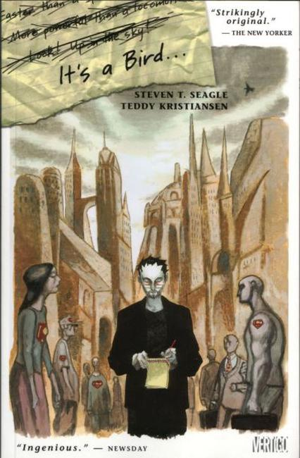

It's A Bird

Series: Graphic Novel
Publisher: Vertigo
Written by Steven T. Seagle
Illustrations by Teddy Kristiansen
Steve's given the dream assignment to write Superman, only he can't relate to a Man of Steel when his own fears of death haunt him. Explore the cultural significance of a comic-book icon as Steve comes to terms with Superman's cultural importance.